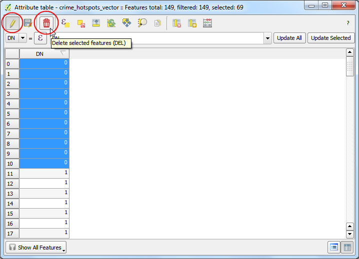

Membuat Heatmap
[ Download PDF A4 Letter ]
Heatmap adalah salah satu alat visualisasi terbaik untuk data poin yang padat. Heatmaps digunakan untuk memudahakan dalam pengidentifikasian cluster dimana ada konsentrasi tinggi suatu aktifitas. Heatmap juga berguna dalam cluster analysis atau hotspot analysis.
Tinjauan Tugas
Kita akan bekerja dengan sebuah dataset lokasi kriminal di Surrey, UK untuk tahun 2011 dan menemukan hotspot kriminal di sebuah negara.
Prosedur
Untuk memulai, unzip data ke sebuah folder. Data dalam format CSV. Kita akan mengimpor data ke QGIS (lihat docs/import_spreadsheets_csv untuk lebih detail). Klik .

Jelajahi file police-uk-crime-data-surrey.txt di komputer anda dan buka. Pilih CSV (comma separated values) sebagai format file. Anda akan melihat kolom Easting dan Northing secara otomatis terpilih sebagai field X dan Y. Pastikan anda memberi tanda cek pada opsi Use spatial index karena ini akan mempercepat operasi anda pada layer ini. Klik OK.

Anda mungkin melihat sejumlah error. Anda dapat tidak menghiraukan hal ini untuk tujuan tutorial ini. Klik Close.

Berikutnya, anda pilih sebuah Coordinate Reference System (CRS) . Jika anda membaca deskripsi data, anda akan melihat bahwa referensi spasial untuk data adalah British National Grid . Pilih OSGB 1936 / British National Grid sebagai CRS. Klik OK.

Sekarang anda akan melihat data dibuka di QGIS.

Zoom-in sedikit lebih dekat untuk mendapat visual yang lebih baik pada data. Anda akan melihat bahwa data cukup padat dan sulit untuk tahu di mana konsentrasi tinggi poin-poin tersebut. Ini saatnya heatmap menjadi berguna.

Untuk membuat heatmap, anda perlu aktifkan sebuah plugin inti bernama Heatmap . Lihat docs/menggunakan_plugin untuk mengerti bagaimana mengaktiflan plugins built-in. Ketika plugin sudah anda aktifkan, akses .
Peringatan
Plugin Heatmap memiliji bug di QGIS 2.8.1. Lihat See this post untuk mencari tahu

Pada dialog Heatmap Plugin , pilih crime_heatmap sebagai nama Output raster . Masukkan 1000 unit map dengan Radius . Radius adalah area disekililing poin yang akan digunakan untuk menghitung heat yang sebuah pixel dapatkan. Beri tanda cek pada Advanced sehingga kita dapat menentukkan ukuran output heatmap kita. Masukkan 100 untuk Cell Size X dan Cell Size Y . Klik OK.

Ketika proses sudah selesai, anda akan melihat heatmap dengan skala abu-abu terbuka di kanvas.

Mari buat heatmap kita terlihat sepert heatmap tradisional yang anda sering lihat. Klik kanan pada layer heatmap dan klik Properties.

Pada tab Style , pilih Singleband pseudocolor sebagai Render type . Berikutnya, pada bagian Load min/max values , pilih Actual (slower) sebagai Accuracy dan klik Load . Ini akan menscan heatmap dan mencari nilai pixel minimum dan maksimum. Nilai-nilai ini akan digunakan untuk menghasilkan sebuah color ramp yang sesuai. Pada bagian Generate new color map , pilih YlOrRd (Yellow-Orange-Red) sebagai color ramp, dan klik Classify . Klik OK.

Sekarang anda akan melihatt sebuah heatmap yang lebih menarik . Anda dapat memilih tool xxx dan klik pada pixel manapun pada heatmap. Anda akan melihat nilai pixel pada pop-uo hasil. Nilai pixel ini adalah penghitungan berapa banyak poin dari layer sumber yang masuk pada radius yang sudah ditentukan ( dalam kasus kita - 1000m ) di sekitar pixel.

Sekarang anda memiliki heatmap anda. Ini berguna untuk interpretasi visual, tapi tidak begitu berguna untuk menggunakan hasil ini dalam analisis. Seringkali, anda ingin mengidentifikasi hotspots , dimana ada konsentrasi tinggi poin. Sekarang kita akan mencoba untuk mengidentifikasi hotspots ini menggunakan heatmap. Akses .

Anda akan diharuskan memtuskan nilai pembatas. Semua nilai pixel di atas batas akan dipertimbangkan sebagai sebuah cluster. Mari kita gunakan nilai 5 untuk data ini. Pada dialog Raster calculator , beri nama layer output sebagai crime_hotspots . Dobel-klik crime_heatmap@1 pada bagian Raster bands dan ini akan ditambahkan pada area teks Raster calculator expression . Lengkapi ekspresi menjadi “crime_heatmap@1” > 5 . Beri tanda cek pada box Add result to project dan OK.

Sebuah layer baru akan ditambahkan ke QGIS. Layer ini memiliki pixel dengan nilai antara 0 dan 1. Semua pixel pada layer input di mana nilai pixel lebih dari 5 akan bernilai 1 dan pixel yang lain bernilai 0. Klik .

Beri nama file output crime_hotspots_vector . Beri tanda cek pada Field name dan juga Load into canvas when finished . Klik OK.

Ketika konversi selesai, anda masih mempunyai layer lain untuk ditambahkan ke QGIS. Ini adalah representasi vektor dari cluster yang dihasilkan di langkah sebelumnya. Layer-layer berisi cluster dengan nilai 0 dan 1. Mari kita filter atau saring keluar nilai 0, sehingga kita mendapat cluster dari hotspot. Klik kanan pada layer dan pilih Open Attribute Table.

Pada Attribute table , klik Select feature using an expression.

Masukkan ekspressi “DN” = 1 dan klik Select . Berikutnya, klik Close.

Pada jendela utama QGIS, anda akan melihat sejumlah fitur ditandai warna kuning. Ini adalah fitur yang sesuai dengan query. Klik kanan pada layer dan pilih Save Selection As....

Beri nama output layer dengan crime_clusters . Beri cek pada Add saved file to map dan klik OK.

Sekarang anda sudah memiliknya. Layer final berisi hotspots yang diekstrak dari heatmap. Cluster ini adalah intelligence yang diperoleh dari data mentah dan dapat menyediakan pandangan yang berguna ataupun menjadi input untuk proyek yang lebih jauh.
